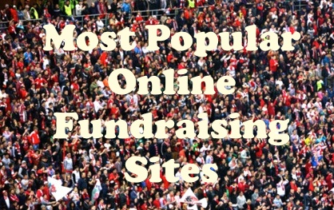

Even if your group has a website – what if a PayPal Donation button isn’t enough and you still need help with marketing, email services and tracking your donations? Consider trying on of the dozens of online fundraising sites available; we’ve combed the web for you and have come up with a list of the 15 (or so) most popular ones.
Each of the websites below provides a variety of services, some which might be useful for your group, some won’t. Be sure you don’t pay for services you don’t need and that the customer support offered is sufficient for you. Of course, make sure the website itself appeals to you and is easy to use! (Tip: Raising funds online may present new legal considerations for your group. It may be best to consult your legal adviser before raising funds online.)
| Site | Important to Know |
|---|---|
| gofunme | Can withdraw immediately and deposits take 2-5 business days 24/7 rapid email support, mobile app, superior add beneficiary fea Easy to use fundraising tools make setup fast GoFundMe Guarantee protects donors and beneficiaries from fraud |
| indiegogo | Offers "flexible funding" Specializes in technology and hardware product launches Regular email support hours; marketing and campaign strategy support |
| kickstarter | Specializes in creative projects with robust reward level feature |